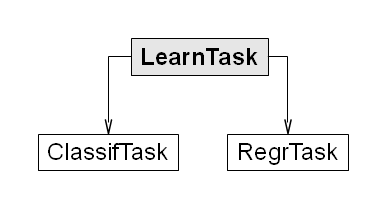

Tasks¶
Learning tasks are the basic element of the package to encapsulate the data set and all relevant information regarding the purpose of the task. This will be at least the target variable, but might also be information about excluded (ID) variables or case weights.
Currently two subclasses of a LearnTask exist, ClassifTask for classification problems and RegrTask for regression. A classification task is created by using the makeClassifTask factory method. The target variable is converted to a factor if it is a logical, integer or character vector. Accordingly use makeRegrTask for defining a regression task. The target variable is converted to a numeric.

Classification example¶
In the following example we define a classification task for the data set BreastCancer (from the package mlbench) and exclude the ID variable from all further model fitting and evaluation.
> library("mlr")
> library("mlbench")
> data(BreastCancer)
> ct <- makeClassifTask(data = BreastCancer, target = "Class",
+ exclude = "Id")
Now let us examine the created task:
> ct
Classification problem BreastCancer
Features:
numerics integers factors characters logicals
0 0 9 0 0
Observations: 699
Missings: TRUE
in 16 observations and 1 features
Infinites: FALSE
Target: Class
Classes: 2
benign malignant
458 241
Positive class: benign
Has weights: FALSE
Has blocking: FALSE
he now defined task contains basic information about the data, e.g. the types of features, the number of observations and the number of missing values, as well as the classification problem, e.g. the name of the target variable and the number of observations per class.
As this is a binary problem, we see that a positive class is selected by default. This will generally be the first class in the factor levels of the target. You probably want to select this manually for your applications.
> ct <- makeClassifTask(data = BreastCancer, target = "Class",
+ exclude = "Id", positive = "malignant")
There are some convenience methods to access properties of the data set and the classification problem. Look at the documentation of the LearnTask class <a and its subclasses ClassifTask and RegrTask, if you are interested in what kind of those “getter”-functions are available. Here are some examples:
> getFeatureNames(ct)
[1] "Cl.thickness" "Cell.size" "Cell.shape" "Marg.adhesion"
[5] "Epith.c.size" "Bare.nuclei" "Bl.cromatin" "Normal.nucleoli"
[9] "Mitoses"
> head(getTargets(ct))
[1] benign benign benign benign benign malignant
Levels: benign malignant
> getClassLevels(ct)
[1] "benign" "malignant"
All information can be obtained from the slots of the LearnTask object directly.
The main part of the information is stored in the slot called desc, which stands for description. ct@desc is an object of class TaskDesc.
> ct@desc
task.desc
> str(ct@desc)
Formal class 'task.desc' [package "mlr"] with 11 slots
..@ type : chr "classif"
..@ id : chr "BreastCancer"
..@ target : chr "Class"
..@ size : int 699
..@ n.feat : Named int [1:5] 0 0 9 0 0
.. ..- attr(*, "names")= chr [1:5] "numerics" "integers" "factors" "characters" ...
..@ class.dist : Named int [1:2] 458 241
.. ..- attr(*, "names")= chr [1:2] "benign" "malignant"
..@ has.missing : logi TRUE
..@ has.inf : logi FALSE
..@ has.weights : logi FALSE
..@ has.blocking: logi FALSE
..@ positive : chr "malignant"
> ct@desc@type
[1] "classif"
> ct@desc@size
[1] 699
Optionally we can include further information like observation weights or a blocking factor into the task. Via the blocking argument you can specify if some observations “belong together”. Specifically, they are either put all in the training or the test set during a resampling iteration. The blocking argument is a factor of the same length as the number of observations in the data set where observations with the same factor level belong to the same block.
Include observation weights in order to upweight class “malignant” with factor 3:
> w <- c(1, 3)[BreastCancer$Class]
> ct <- makeClassifTask(data = BreastCancer, target = "Class",
+ exclude = "Id", positive = "malignant", weights = w)
> head(ct@weights)
[1] 1 1 1 1 1 3
Now lets include a (nonsensical) blocking structure:
> blocking <- factor(rep(1:3, nrow(BreastCancer)/3))
> ct <- makeClassifTask(data = BreastCancer, target = "Class",
+ exclude = "Id", blocking = blocking)
> head(ct@blocking)
[1] 1 2 3 1 2 3
Levels: 1 2 3
> table(ct@blocking)
1 2 3
233 233 233
From this classification task we can now train various models, which will be covered in the section <a href=”train.html”>Training </a>. Before that, let’s look at a regression experiment.
Regression example¶
> library(mlbench)
> data(BostonHousing)
> rt <- makeRegrTask(data = BostonHousing, target = "medv")
> rt
Regression problem BostonHousing
Features:
numerics integers factors characters logicals
12 0 1 0 0
Observations: 506
Missings: FALSE
Infinites: FALSE
Target: medv
Has weights: FALSE
Has blocking: FALSE
> getFeatureNames(rt)
[1] "crim" "zn" "indus" "chas" "nox" "rm" "age"
[8] "dis" "rad" "tax" "ptratio" "b" "lstat"
> head(getTargets(rt))
[1] 24.0 21.6 34.7 33.4 36.2 28.7
> rt@desc@target
[1] "medv"